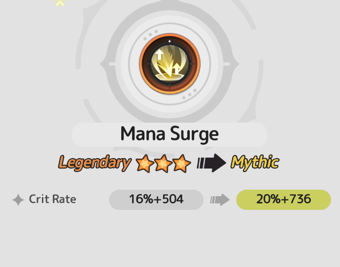
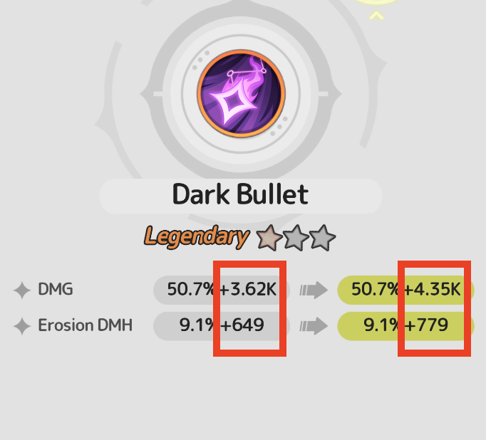
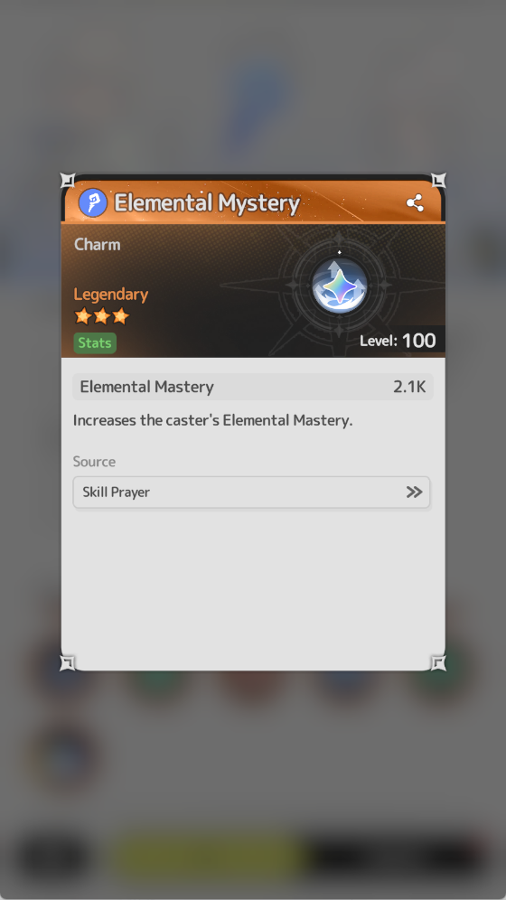
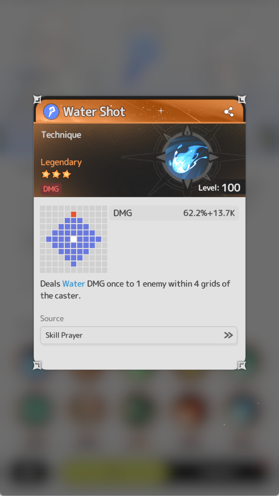
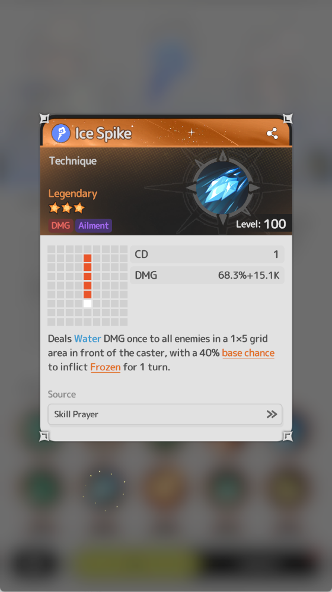

Chuyển nhanh giữa 18 chuyên đề chuyên sâu
1. Tân Thủ, Căn Cứ & 30 Code2. Công Thức & Skill Ascend3. Chọn Nghề & Đổi Lớp Lv.1004. Hồ Sơ Kiếm Công (Bậc 1→7)5. Hồ Sơ Khiên Thủ (Hiệp Sĩ)6. Hồ Sơ Trượng Công (Bậc 1→7)7. Hồ Sơ Hiền Giả & Bí Thuật8. Bộ Build Meta 4 Chế Độ9. Trang Bị, Đá Thần Tạo & Ngọc10. Cổ Vật & 12 Huyễn Thú11. Tiểu Sử 13 NPC, Collab & Món12. Chu Kỳ 8+7n, Bingo N15 & Reset13. Xâm Lăng Hỗn Mang (Full)14. Bản Đồ Kanstein & Co-op15. Tính Tài Nguyên & % Rank16. Tích Lũy Skill, Cổ Vật & Tâm Giao17. Lộ Trình Event Xoay Vòng & Lớn

1. Công Thức Tính Sát Thương 4 Giai Đoạn, Đỡ Đòn vs Chính Xác & Đánh Kép
Combat Math- Giá trị kép của ATK & Xuyên Giáp: Khi
ATK = DEF, bội số phòng ngự bằng0.3125. Nếu ATK tụt sâu dưới DEF Boss, sát thương bị bóp nghẹt nặng nề — vì vậy kỹ năng bỏ qua DEF như Piercing Assault hay trừ giáp từ Nyxarchon mang lại lượng sát thương đột biến. - Quy đổi Tinh Thông & Trần Giảm ST: Mỗi
40 Tinh Thông = +1% Sát Thươngđúng hệ; trần tổng Giảm Sát Thương tối đa đạt-90%.
- Đỡ Đòn (Block) kiểm tra TRƯỚC Bạo Kích:
Block_Thực = Block_Địch − Accuracy_Bạn. Bị Block đồng nghĩa mất ngay 50%+ sát thương VÀ 0% cơ hội nổ Bạo Kích! - Accuracy vs Effect Hit & Cướp Lượt Kép: Accuracy chống Block; Effect Hit Rate chống Status Resistance khi gắn DoT/Đóng Băng/Khiêu Khích. Khi
SPD ≈ 2× đối thủ, bạn được đánh 2 lượt liên tiếp trong 1 chu kỳ.
2. Năm Loại Kỹ Năng, 4 Nhóm Sát Thương (Buckets) & Hệ Thống Skill Tags
Skill Architecture- 5 Loại Kỹ Năng Trong Game: Gồm Chiến Kỹ (Technique) lắp 4 ô chủ động bên trái, Bí Thuật (Charm) lắp 4 ô bị động bên phải, Nội Tại Lớp (Passive), Kỹ Năng Trang Bị (Gear Skill) và kỹ năng Đồng Hành/Huyễn Thú.
- 4 Nhóm Sát Thương Tách Biệt: Gồm
Sát Thương Chiến Kỹ (Technique DMG),Sát Thương Bí Thuật (Charm DMG),Sát Thương Buff (Buff DMG)vàSát Thương Không Phân Loại (Unclassified DMG — Pet, NPC, Gear Skill).
- Thẻ Kỹ Năng (Skill Tags): Mỗi chiêu gắn các nhãn như
DMG,Knock Back (Đẩy lùi),Self Buff,Ally Buff Heal,Debuff. Nhiều Bí Thuật chỉ kích hoạt khi dùng đúng thẻ tag. - Tăng Cấp Ô Kỹ Năng Bằng Essential: Nâng cấp trực tiếp phần Basic Damage (số phẳng bên phải) — tạo mức sát thương sàn bảo hiểm khi nhân vật dính debuff giảm ATK! Lưu ý một số Bí Thuật và kỹ năng bậc thấp có biên độ tăng Basic DMG kém hơn kỹ năng bậc hiện tại.
3. Toán Học Thăng Cấp Kỹ Năng (Skill Ascend): Sao (★) vs Phẩm Chất (Rarity)
Rare → Immortal- Lộ trình 6 bậc Phẩm Chất:
Rare (Lam) → Epic (Tím) → Legendary (Cam) → Mythic (Đỏ) → Divine (Thần) → Immortal (Bất Tử). - Vì sao Phẩm Chất quan trọng gấp nhiều lần Sao ★? Thăng 1 Sao trong cùng phẩm chất tăng
15%–30%phần số phẳng bên phải (thường chỉ chiếm nửa giá trị chiêu → nếu chiêu chiếm 30% tổng DPS thì 1 sao chỉ tăng ~5% tổng sát thương!). Ngược lại, đột phá lên Phẩm Chất mới tăng CẢ hệ số % bên trái lẫn số phẳng bên phải: trung bình Chiến Kỹ tăng +25%/bậc và Bí Thuật tăng +20%/bậc! - Ví dụ kiểm chứng trực tiếp trong game: Boiling Bloodlust ở bậc Tím cho
30% Crit Rate→ nhân 1.25 qua các bậc sẽ thành30% → 38% → 47% → 59% → 73%(sát giá trị thực tế70%ở Immortal!). Với Bí Thuật Blade of Lament bậc Cam2.44% Hút Máu→ nhân 1.20 thành2.44% → 2.93% → 3.51% → 4.22%! Mẹo dùng Phiếu Mảnh Kỹ Năng (Skill Shard Voucher): Đẩy chạm ngưỡng phẩm chất mới rồi dừng ngay để chuyển phiếu sang kỹ năng trụ cột kế tiếp!


4. Nội Tại Bí Ẩn Nguyên Tố & Sơ Đồ Ô Lưới Tầm Đánh Thực Chiến
Grid & ElementsHệ Pháp Sư xoay quanh vòng khắc chế Gió → Nước → Lửa → Gió (kẻ địch kháng nguyên tố bị khắc chỉ nhận 50% sát thương, thậm chí Slime nguyên tố miễn nhiễm 100%, nhưng nhận sát thương khổng lồ từ hệ khắc nó!). Hãy lưu sẵn nhiều Loadout nguyên tố và canh chuẩn ô lưới:


